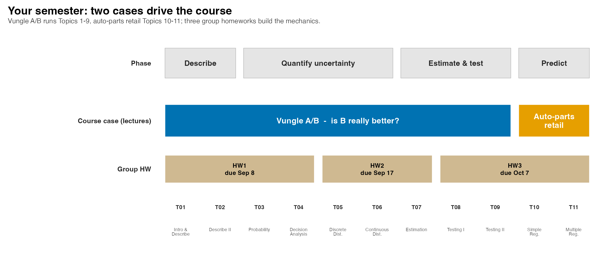
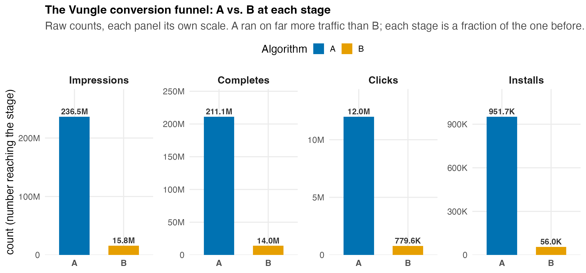
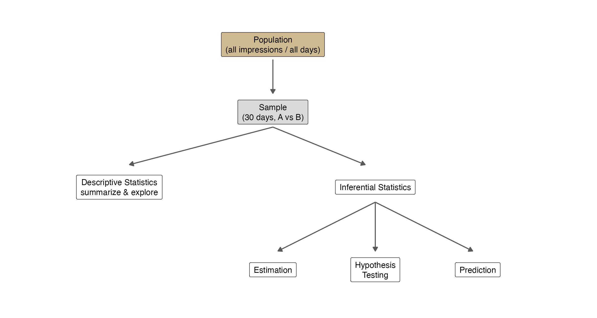
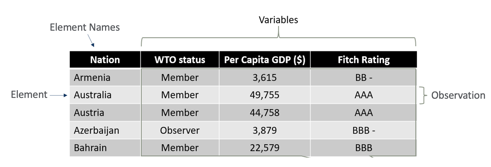
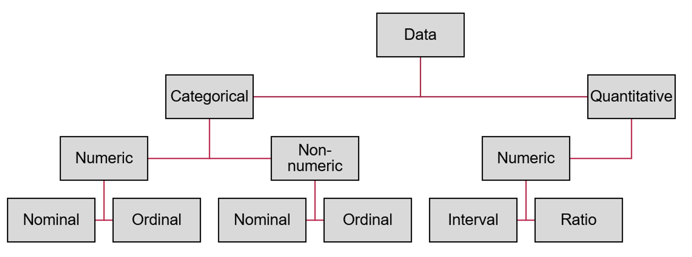
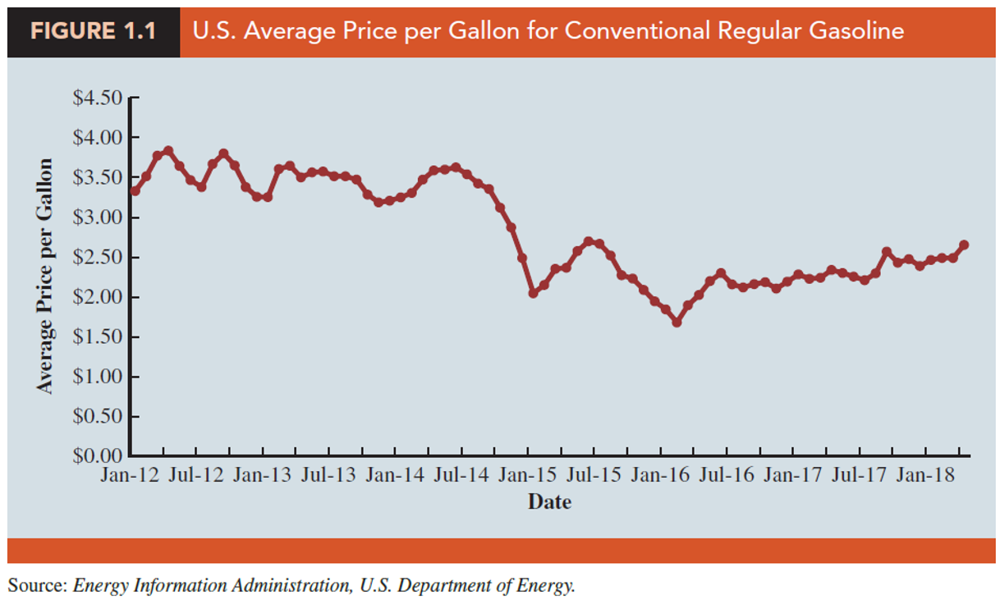
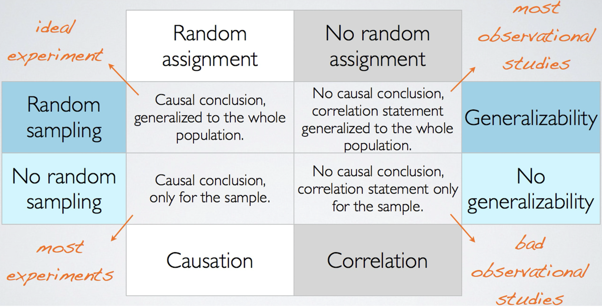
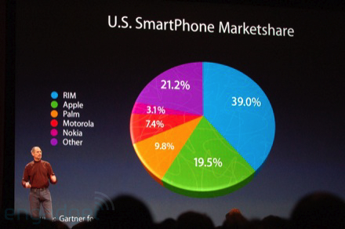
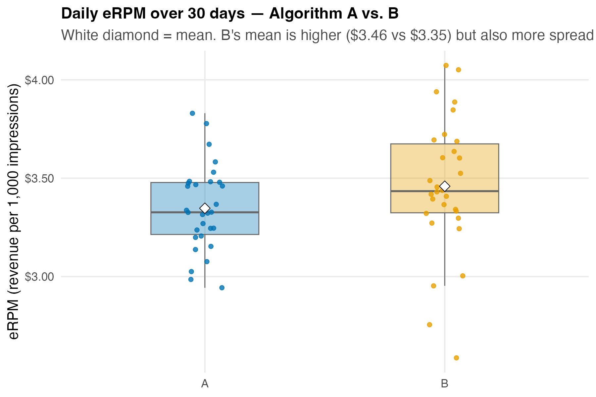

QM 6700: Business Analytics
Course Introduction & Descriptive Statistics I
Professor: Davi Moreira
Welcome!
Overview
- Introductions, logistics & your group
- The semester roadmap: two cases, one job
- Case Spotlight: A/B Testing at Vungle
- What is statistics? Where is it used?
- The map: descriptive vs. inferential
- Data, variables & observations — the Vungle dataset
- Data types & scales of measurement
- Study design: why Vungle ran an experiment
- A first look at the data in Excel (
Excel4stats)
Introductions
Instructor
- Clinical Assistant Professor in the Management Department at Purdue University;
- My academic work addresses Political Communication, Data Science, Text as Data, Artificial Intelligence, and Comparative Politics.
Instructor’s Passions
Instructor’s Passions
Students
- It is your turn! - 5 minutes
- Introduce yourself to the colleague on your left or right. Then ask them to rate, on a scale from 1 (not at all) to 5 (a lot), how much they like statistics.
Course Overview and Logistics
Course Overview and Logistics
Materials:
Brightspace
Syllabus
Slides
Podcast
Videos
Supplementary Material
Schedule
How to Succeed in This Course
Start from zero, by design. No prior statistics is assumed — this is your first analytics course, and we build every method up from a real business decision.
Keep up every week. Statistics builds on itself — today’s vocabulary becomes next week’s formulas. Falling behind compounds.
Work with your group. In-class cases are solved and submitted together; homework you do on your own. Explaining a method to a groupmate is the fastest way to learn it.
You’re the decision-maker. Every method we learn answers a call you have to make. Learn each one well enough to check an analyst’s work, and always ask: what decision does this number support, and would I stake money on it?
Use Excel from day one. Install the Analysis ToolPak this week and open the course dataset — you will use it all semester.
How the Class Works
Your group: you’ll be randomly assigned to a fixed group this week and work every in-class case with it.
Submit before you leave: each class your group turns in one deliverable on Brightspace — your decision plus the evidence. A grader scores it.
Bring a laptop with Excel + the Analysis ToolPak to every session.
Homework is individual: three problem sets that drill the mechanics, posted on Brightspace.
How Every Class Runs

- Same five beats every meeting. The one that counts for your grade is the Team Sprint — your group’s decision, submitted before you leave.
Textbook & Software
Textbook & Materials
Statistics for Business and Economics (SBE), 14th edition
Anderson · Sweeney · Williams · Camm · Cochran — Cengage, 2020 · ISBN-13 978-1337901062
- The course schedule lists the readings for each topic.
- Software: Excel with the Analysis ToolPak — every worked example is Excel-first.
Survey
Survey
10 min
Your Semester: Two Cases, One Job
You’re the Decision-Maker — Two Cases to Crack
- This course puts you in the decision-maker’s seat: the manager, CEO, or owner who has to act. You’ll work in a fixed group (assigned this week), cracking real cases in class and judging the analysis behind every call.
- ① Vungle A/B — Topics 1–9 (up first). A mobile ad-tech startup asking roll out algorithm B, or keep A? You’ll learn to describe, quantify uncertainty, and test so you can judge that claim before betting the company on it.
- ② Auto-parts retail — Topics 10–11. A 45-store chain asking where should the next dollar go? You’ll evaluate the analyst’s model that predicts store sales, then decide where to invest.
- Every class: your group works the case live and submits its call before you leave (graded). Homework is separate and individual — problem sets that drill the mechanics.
The Roadmap: Which Case, Which Week
Every case runs the same path: describe → quantify the uncertainty → test → predict. You crack it in your group and submit before you leave; three individual homeworks build the mechanics:

Case Spotlight: A/B Testing at Vungle
Meet Vungle: One Decision, 30 Days of Data
Vungle is a mobile ad-tech startup: it serves 15-second video ads inside other apps and earns revenue mainly when a viewer installs the advertised app.
The metric that pays the bills is eRPM — effective revenue per 1,000 impressions.
In June 2014, two analysts built a new ad-serving algorithm (B) and ran it head-to-head against the current one (A) for the whole month.
Your call as Vungle’s CEO: roll out B to all advertisers, or stay with A?
We will use this one decision (is B better than A?) to motivate every tool in this course.
The Data Behind the Decision

- Each ad impression can become a completed view, then a click, then an install. That chain is the conversion funnel.
- 30 days, both algorithms, the full funnel — that is the dataset
vungle_daily.csvwe will analyze all term.
The Tempting Answer — and Why It Is Not Enough
A manager glances at the data: “B’s average daily eRPM was $3.46 vs. A’s $3.35 — so roll out B!”
Not so fast. Before you can bet the company on that $0.11 gap, you have to ask:
- Is $0.11 a real difference, or just day-to-day noise?
- Is 30 days enough to generalize to all future traffic?
- What kind of data is this, and which statistics are even valid to compute?
Answering those is the job of this course. Today we start at the foundation: what is this data?
What is Statistics?
What is Statistics?
“Without data, you’re just another person with an opinion.” – W. Edwards Deming
What is Statistics?
Statistics is the science of collecting, organizing, analyzing, interpreting, and presenting data to make informed business decisions.
It turns raw numbers, like Vungle’s 30 days of eRPM, into a defensible answer to a manager’s question.
The goal is always the same: reduce uncertainty enough to act.
Where Is Statistics Applied in Business?
Accounting — audit sampling to test whether reported figures are accurate.
Finance — estimating the return and risk of portfolios; pricing default risk.
Marketing — consumer surveys, A/B testing ad creative, demand forecasting.
Production / Operations — quality control, process design, capacity planning.
Human Resources — recruiting analytics, salary benchmarking, retention modeling.
The Map: How Statistical Analysis Works

Descriptive vs. Inferential Statistics
Descriptive statistics — tabular, graphical, and numerical methods that summarize the data you have (means, charts, tables).
Inferential statistics — using sample data to draw conclusions or make decisions about a larger population.
Classify each Vungle statement:
| Statement | Descriptive or Inferential? |
|---|---|
| “Over the 30 test days, B’s mean eRPM was $3.46.” | Descriptive (summarizes the sample) |
| “If rolled out to all traffic, B will earn more than A.” | Inferential (a claim about the population) |
| “26 of 30 days favored B.” | Descriptive |
| “B’s true conversion rate differs from A’s.” | Inferential |
Roadmap: What “Descriptive” Covers
The next topic builds five summary lenses — each with an Excel tool:
| Lens | Question it answers | Tool |
|---|---|---|
| Location | Where is the center? | mean, median — summary statistics |
| Variability | How spread out? | standard deviation, range |
| Shape | Symmetric or skewed? | histogram, box plot |
| Empirical rule | How much falls near the mean? | 68–95–99.7% |
| Association | Do two variables move together? | scatter plot, correlation |
Data and Statistics
Elements, Variables, and Observations

- An element is the entity on which data are collected.
- A variable is a characteristic of interest for the elements.
- An observation is the set of measurements for one element.
- A data set with \(n\) elements has \(n\) observations; total values = elements × variables.
Read the Data Before You Trust the Analysis
- A recommendation is only as good as the data under it, so a sharp manager looks first. Here is a slice of
vungle_daily.csv, algorithms interleaved by day:
| algorithm | date | impressions | completes | clicks | installs | erpm |
|---|---|---|---|---|---|---|
| A | 2014-06-01 | 6,777,407 | 5,978,434 | 345,309 | 31,119 | 3.327 |
| B | 2014-06-01 | 569,044 | 499,235 | 28,035 | 2,111 | 2.953 |
| A | 2014-06-02 | 6,004,310 | 5,331,727 | 299,732 | 24,601 | 2.943 |
| B | 2014-06-02 | 505,963 | 447,695 | 24,621 | 1,713 | 2.587 |
- Element = one algorithm-day (60 of them). Variables = the 7 columns. One observation = one row. Total values = 60 × 7 = 420.
Data Types
Categorical (Qualitative) Data
- Labels or names that identify an attribute of each element
- Use the nominal or ordinal scale
- Can be numeric or non-numeric
- Only limited arithmetic is meaningful (counts, proportions)
Quantitative Data
- Indicate how many or how much — always numeric
- Discrete: counts (how many) — e.g., installs
- Continuous: measurements (how much) — e.g., eRPM
- Ordinary arithmetic (+, −, ×, ÷) is meaningful
Data Types: Examples
| Categorical: Nominal | Categorical: Ordinal | Quantitative: Continuous or Discrete |
|---|---|---|
| Ad algorithm (A/B) | Satisfaction Level | eRPM (revenue / 1,000 impr.) |
| Vehicle Type | Education Level | Number of Installs |
| Music Genre | Customer Feedback | Revenue |
| Nationality | Job Position | Product Weight |
| Operating System | Priority Level | Market Share |
- Nominal categorizes with no inherent order (Vungle’s
algorithm: A vs. B). - Ordinal categorizes with a meaningful order but no consistent gap between levels.
- Quantitative is numeric — discrete values are countable (
installs); continuous values can take any value in a range (erpm).
Scales of Measurement

Scales of Measurement
- Categorical Data — sortable into groups.
- Nominal: no inherent order (gender, car type, nationality, ad algorithm).
- Ordinal: a meaningful order, but no consistent difference between levels (satisfaction level; education level; job rank).
- Quantitative Data — measured numerically.
- Interval: meaningful differences, no true zero (temperature in °C/°F).
- Ratio: meaningful differences and a true zero (height, weight, revenue, eRPM, installs).
Classify Vungle’s Variables
- Before any analysis, audit every column — because the scale determines which statistics are valid:
| Variable | Type | Scale | What you may compute |
|---|---|---|---|
algorithm |
Categorical | Nominal | counts, proportions — not a mean |
date |
Categorical (ordered) | Ordinal / Interval | ordering, time gaps |
impressions, completes, clicks, installs |
Quantitative — discrete | Ratio | counts, sums, means, rates |
erpm |
Quantitative — continuous | Ratio | mean, SD, t-tests — the primary KPI |
- Asking for the “average
algorithm” is meaningless; asking for the “averageerpm” is the whole point. Scale sets your toolbox.
Where Data Comes From
Existing sources — internal records (Vungle’s ad server logs), public/government databases, industry reports.
Collection by study:
- Observational — record what happens without intervening (a customer survey).
- Experimental — set the conditions on purpose, then measure (Vungle assigns traffic to A or B).
Cross-sectional — many elements at one point in time.
Time series — one element across many time periods.
Cross-Sectional vs. Time Series — the Vungle Data
On any single day, comparing A vs. B is a cross-sectional snapshot (two entities, one moment).
Tracking one algorithm across the 30 days is a time series.
The full dataset is a panel — repeated cross-sections over time.

Study Design
Observational vs. Experimental Studies
Observational
In an observational study, no attempt is made to control the variables of interest. A survey is the classic example.
Researchers watch a random sample of Walmart shoppers and record time in store, gender, and amount spent, without ever intervening.
Experimental
In an experiment, the variable of interest is identified, then its levels are set and controlled, so we can see how they influence an outcome.
The 1954 Salk polio-vaccine trial randomly assigned nearly two million children to vaccine or placebo. It is the largest experiment ever run.
Vungle Ran an Experiment — So We Can Say “Caused”
The
algorithmcolumn is the treatment: each impression was randomly assigned to A or B (by an MD5 hash) on the same days.Random assignment balances everything else (same market, same advertisers, same weekends), so the only systematic difference is the algorithm.
That is what licenses causal language: “B caused higher eRPM,” not merely “B was associated with higher eRPM.”
Payoff: only an experiment supports a causal claim. An observational “B-days looked better” could be confounded; Vungle’s design rules that out.
Random Assignment vs. Random Sampling

- Random sampling (who gets into the study) supports generalizing to the population.
- Random assignment (who gets which treatment) supports causal comparison.
Descriptive Statistics
Summarizing and Presenting Data

Summarizing and Presenting Data

A First Look at eRPM

- A picture already tells a story: B’s mean is higher (white diamonds), but B is more spread out — a hint that “B is better” may not be the whole truth.
- Describing is step one; deciding whether that gap is real comes later (Topics 7–9).
Measures of Location: the Mean
- The first job of describing is finding the center. The workhorse is the mean — add the values, divide by the count:
\[ \bar{x} = \frac{\sum_{i=1}^{n} x_i}{n} \]
- Vungle’s 30-day mean eRPM: A = $3.347, B = $3.459 — B’s center sits $0.11 higher.
- That $3.459 is a point estimate of B’s true mean eRPM — the number we will later put to the test.
Median & Mode — and When to Use Which
- Median — the middle value (50th percentile); unmoved by outliers. Vungle: A median $3.327, B $3.434. Mean ≈ median ⟹ the eRPM distribution is roughly symmetric.
- Mode — the most frequent value; the only center valid for categorical data (e.g., the most-served
algorithm). For continuous eRPM every value is distinct, so the mode says nothing. - Rule of thumb: report the mean for symmetric data, the median when it is skewed or has outliers.
Your Excel Toolkit: the Analysis ToolPak

data/vungle_daily.xlsx
Install it once: File → Options → Add-ins → Analysis ToolPak (and Analysis ToolPak-VBA) → Go.
Then every analysis lives under Data → Data Analysis.
Do this this week with
vungle_daily.xlsxopen — it is the dataset for the whole term.
⏱️ Team Sprint — Pressure-Test the Analyst’s Claim
You’re the management team. An analyst’s memo lands: “B’s average eRPM beat A’s, so roll it out.” Before you act on it, check it.
Data: data/vungle_daily.xlsx · Time: ~12 min
- Reproduce it: with the ToolPak’s Descriptive Statistics, compute the mean and median eRPM for A and for B yourself. Does the analyst’s headline hold?
- Audit the inputs: name the elements, variables, and the type & scale of
algorithmanderpm, so you know which numbers are even valid to compare. - Interrogate it: how big is B’s edge? Name two reasons it might not survive scrutiny (sample size, spread, traffic, the metric itself).
Submit before you leave (group, 1 slide): your call (roll out, wait, or send it back) plus the two weaknesses you would put to the analyst.
Debrief — Back to the Decision
We can now describe the data cleanly: A’s mean eRPM is $3.35, B’s is $3.46, over 30 carefully-designed experimental days.
We cannot yet say whether B is really better for all future traffic — that is inference, and it needs the tools in Topics 7–9.
Your call today: not yet. You can describe B’s edge, but approving a company-wide roll-out needs an inference test, and that is exactly what you will demand from your analyst in Topics 7–9.
Statistical Inference
Statistical Inference

Population: all elements of interest (every future impression).
Sample: a subset (Vungle’s 30 test days).
Descriptive Statistics: tabular, graphical, numerical summaries.
Inferential Statistics: using the sample to estimate or test claims about the population.
Estimation: approximate a population parameter (true mean eRPM).
Hypothesis Testing: weigh evidence for a claim (is B > A?).
Prediction: forecast future outcomes from data.
Data Science, Big Data, and Data Mining
Data Science, Big Data, and Data Mining — Definitions
- Data Science:
- The interdisciplinary field that uses scientific methods, algorithms, and systems to extract knowledge and insights from structured and unstructured data.
- Big Data:
- Extremely large datasets analyzed computationally to reveal patterns, trends, and associations — especially about human behavior.
- Data Mining:
- Examining large databases to generate new information; at the intersection of machine learning, statistics, and database systems.
How Data Science, Big Data, and Data Mining Are Used
- Data Science:
- Personalizing marketing by predicting preferences and buying behavior.
- Optimizing supply chains through predictive analytics.
- Big Data:
- Mining customer feedback and social media to improve service and products.
- Detecting fraud by monitoring transaction patterns in real time.
- Data Mining:
- Surfacing sales leads from past purchases and demographics.
- Reducing churn by learning who is about to leave and why.
The Takeaway
Manager’s Takeaway
One sentence: today we turned a CEO’s question — roll out B or keep A? — into a precise data problem, and built the vocabulary to describe it.
One number to remember: 60 rows × 7 variables = 420 values — that is Vungle’s dataset, and you can name every element, variable, and observation in it.
One principle: the scale of a variable determines which statistics are valid — count
algorithm, averageerpm.Practice: open
data/vungle_daily.xlsx, install the Analysis ToolPak, and run Descriptive Statistics onerpm. Bring one question to next class.
Carry-forward
Today’s submission: your group’s roll-out call is your first graded deliverable — a real decision taken on day one.
Next time: we go deeper into describing — spread, shape, the boxplot, and how two variables move together. (Individual homework starts in a couple of weeks; watch Brightspace.)
Summary
The main points from this session:
- Your seat all term: you are the decision-maker — you run every method yourself, but to judge the analysis and make the call, not to be the analyst.
- Two cases, worked in your group: Vungle A/B (describe → test, Topics 1–9) and auto-parts retail (predict, Topics 10–11); you submit a graded group call each class, and individual homework drills the mechanics.
- Statistics turns data into defensible business decisions; it splits into descriptive (summarize) and inferential (generalize).
- Data vocabulary: elements, variables, observations; categorical vs. quantitative; the four scales of measurement — and the rule that scale determines method.
- Study design: Vungle ran a randomized experiment, which is what licenses causal claims.
- Excel is your toolkit: install the Analysis ToolPak and meet the dataset on day one.
Thank you!
Business Analytics